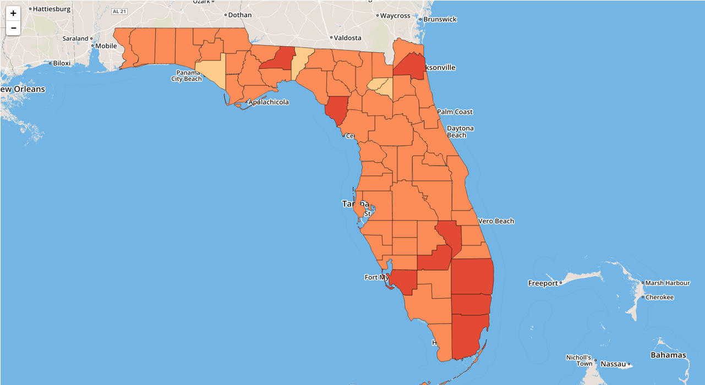
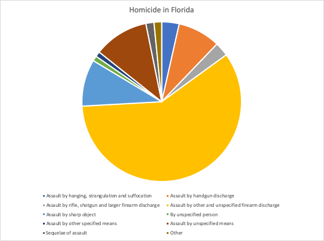

Florida Homicide Average: 5.6 hpy per 100,000 people
United States Homicide Average: 5.1 hpy per 100,000 people
Most dangerous county: Duval at 12.5 hpy per 100,000 people
Least dangerous county: Calhoun at less than 2 hpy per 100,000 people
(Any statistics we want to highlight from the cause of death).
As you can see, most homicides in florida are by firearm.
I'll get a readable pie charts for the final product
Other interesting ideas
Alachua, Baker, Bay, Bradford, Brevard, Broward, Calhoun, Charlotte, Citrus, Clay, Collier, Columbia, DeSoto, Dixie, Duval, Escambia, Flagler, Franklin, Gadsden, Gilchrist, Glades, Gulf, Hamilton, Hardee, Hendry, Hernando, Highlands, Hillsborough, Holmes, Indian River, Jackson, Jefferson, Lafayette, Lake, Lee, Leon, Levy, Liberty, Madison, Manatee, Marion, Martin, Miami-Dade, Monroe, Nassau, Okaloosa, Okeechobee, Orange, Osceola, Palm Beach, Pasco, Pinellas, Polk, Putnam, Santa Rosa, Sarasota, Seminole, St. Johns, St. Lucie, Sumter, Suwannee, Taylor, Union, Volusia, Wakulla, Walton, Washington